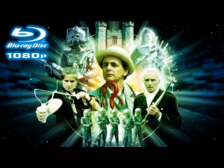
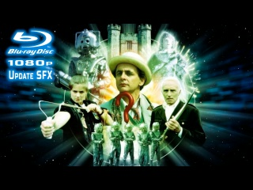
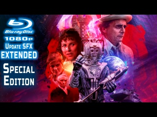
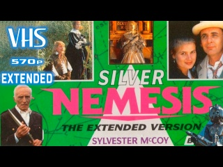
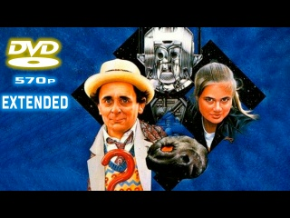
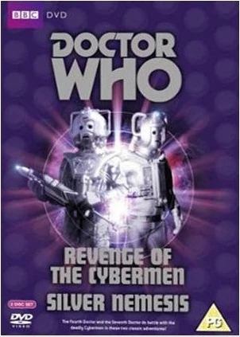
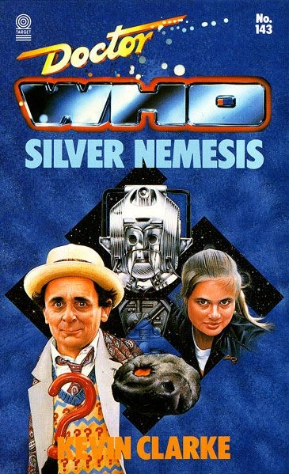
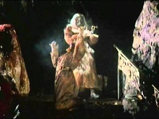

Субтитры: Русские и Английские |  |
|---|---|
с обновленными спецэффектами Субтитры: Русские и Английские |  |
Расширенная с обновленными спецэффектами Субтитры: Русские и Английские |  |
Субтитры: только Английские | |
Субтитры: только Английские |  |
Субтитры: Русские и Английские |  |
Silver Nemesis
Дата выхода: 23 ноября - 7 декабря 1988
Формат: 3 эпизода по 25 мин.
|
Виндзор, 1988 год. Комета Немезида — серебряная статуя из валидиума, живого металла, созданного Рассилоном, — возвращается к Земле каждые 25 лет, оставляя за собой череду катастроф. За ней охотятся сразу три фракции: киберлюди, группа неонацистов во главе с Гансом де Флоресом и леди Пейнфорт — волшебница из XVII века, переместившаяся в 1988-й с помощью чёрной магии. Доктор стравливает их между собой, но леди Пейнфорт знает о Докторе нечто настолько тёмное, что готова шантажировать его этим.()
Юбилейная серия к 25-летию сериала — первая часть вышла ровно 23 ноября 1988 года, в день премьеры самого первого эпизода в 1963-м. «Серебро» в названии — двойная отсылка к серебряному юбилею. Джон Нейтан-Тёрнер пригласил принца Эдуарда на камео, но королевская семья вежливо отказала. Антон Диффринг в роли де Флореса согласился сниматься, чтобы съездить в Лондон на Уимблдон — и это стало его последней ролью в кино. А Николас Кортни, бригадир Летбридж-Стюарт, тут появляется без единой реплики — просто турист у Виндзорского замка.
 VHS - апрель 1993 |  DVD+Boxset - 9 августа 2010 |  Blu-ray - 28 октября 2024 * Версия в нашей группе |
|---|



